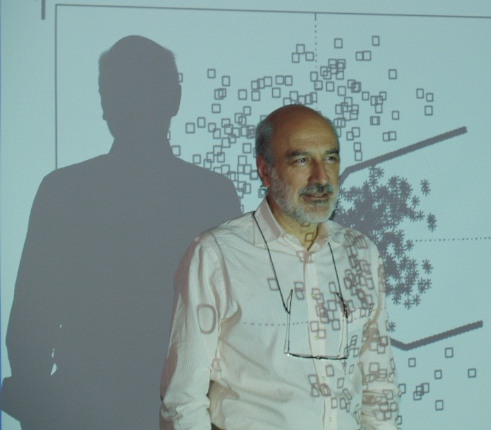

Plenary Speakers
Speaker: Alex Kot
Professor, School of Electrical & Electronic Engineering, Associate Dean, College of Engineering, Director, Rapid-Rich Object Search (ROSE) Lab, Nanyang Technological UniversityTitle: Image Forensics: is a photo worth a thousand words?
Abstract: With the fast proliferation of digital cameras and other image acquisition devices due to the advancement in digital photography technology, photos from the public may have good news values for making journalist reports. However, one big challenge is how to authenticate the photo contents from the public, which may come from unreliable sources. A large variety of forensics works have been proposed to address various forensic challenges based on different types of tell-tale signs. This talk introduces several techniques for: (1) Accurate detection of image demosaicing regularity as a general type of image forensics features. (2) Identification of various common image source models including digital still cameras, RAW conversion tools and the low-end mobile cameras; (3) Universal detection of a wide range of common image tampering. (4) Tampering detection for blur images. (5) EXIF file tampering or content manipulations, (6) Tempering detection with blur images, and (7) Prevention of the image recapturing threat. These techniques help expose common image forgeries, especially those easy-to-make forgeries, which can be hardly seen directly by human eyes. The common theme behind these forensics techniques is through statistical detection of some intrinsic image regularity or tampering anomalies.Biography:
Prof. Alex Kot has been with the Nanyang Technological University, Singapore since 1991. He headed the Division of Information Engineering for eight years before serving as the Vice Dean Research for the School of Electrical and Electronic Engineering. He is currently Professor and Associate Dean for College of Engineering. He is also the Director of Rapid-Rich Object SEarch (ROSE) Lab and a Program Director for New Media at IGS, NTU. He has published extensively in the areas of signal processing for communication, biometrics, data-hiding, image forensics, information security. His new research area is in the domain object search and recognition. Dr. Kot has served as Associate Editor for 9 IEEE Transactions and Journals including Signal Processing, Image Processing, Multimedia, Signal Processing Letters, Signal Processing Magazine, Video Technology, and Information Forensics and Security. Dr. Kot has served the IEEE SP Society in various capacities such as the General Co-Chair for the 2004 IEEE International Conference on Image Processing (ICIP) and as a member in the IEEE Fellow Evaluation Committee. He now serves as the Vice-President for the IEEE Signal Processing Society. He is a member of IEEE SPS Board of Governors. He delivered several keynote addresses and received the Best Teacher of the Year Award. He is a co-author for several Best Paper Awards. He was the IEEE CASS Distinguished Lecturer in 2005 and 2006, and is an IEEE SPS Distinguished Lecturer in 2014 and 2015, a Fellow of IES, a Fellow of IEEE, and a Fellow of Academy of Engineering, Singapore.
Speaker: Jose C. Principe
Distinguished Professor of Electrical Engineering, BellSouth Professor and the Founder and Director of Computational NeuroEngineering Laboratory (CNEL), University of FloridaTitle: Discovery of Space-Time Structure with Dynamical Systems
Abstract: This talk describes our efforts to understand and exploit the properties of dynamical systems (linear and nonlinear) for the unsupervised learning of space-time data structure. There are many advantages of using a continuous space for learning the metric defined by the data. However, the difficulty is that it is hard to implement discriminant solutions as needed for time series clustering or object recognition in video. We will show three case studies that solve these problems with different topologies using different cost function and present preliminary results in several data sets.Biography:
Jose C. Principe (M’83-SM’90-F’00) is a Distinguished Professor of Electrical and Computer Engineering and Biomedical Engineering at the University of Florida where he teaches advanced signal processing, machine learning and artificial neural networks (ANNs) modeling. He is BellSouth Professor and the Founder and Director of the University of Florida Computational NeuroEngineering Laboratory (CNEL) www.cnel.ufl.edu . His primary area of interest is processing of time varying signals with adaptive neural models. The CNEL Lab has been studying signal and pattern recognition principles based on information theoretic criteria (entropy and mutual information). Dr. Principe is an IEEE Fellow. He was the past Chair of the Technical Committee on Neural Networks of the IEEE Signal Processing Society, Past-President of the International Neural Network Society, and Past-Editor in Chief of the IEEE Transactions on Biomedical Engineering. He is a member of the Advisory Board of the University of Florida Brain Institute. Dr. Principe has more than 600 publications. He directed 81 Ph.D. dissertations and 65 Master theses. He wrote in 2000 an interactive electronic book entitled “Neural and Adaptive Systems” published by John Wiley and Sons and more recently co-authored several books on “Brain Machine Interface Engineering” Morgan and Claypool, “Information Theoretic Learning”, Springer, and “Kernel Adaptive Filtering”, Wiley.


@ Copyright 2014 DSP 2015